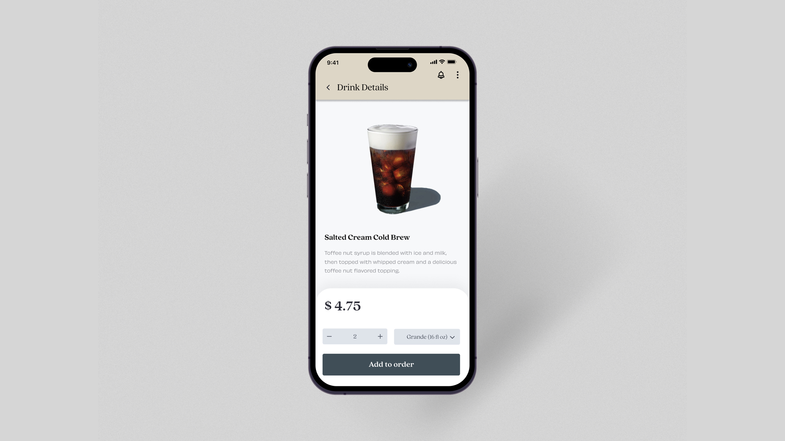
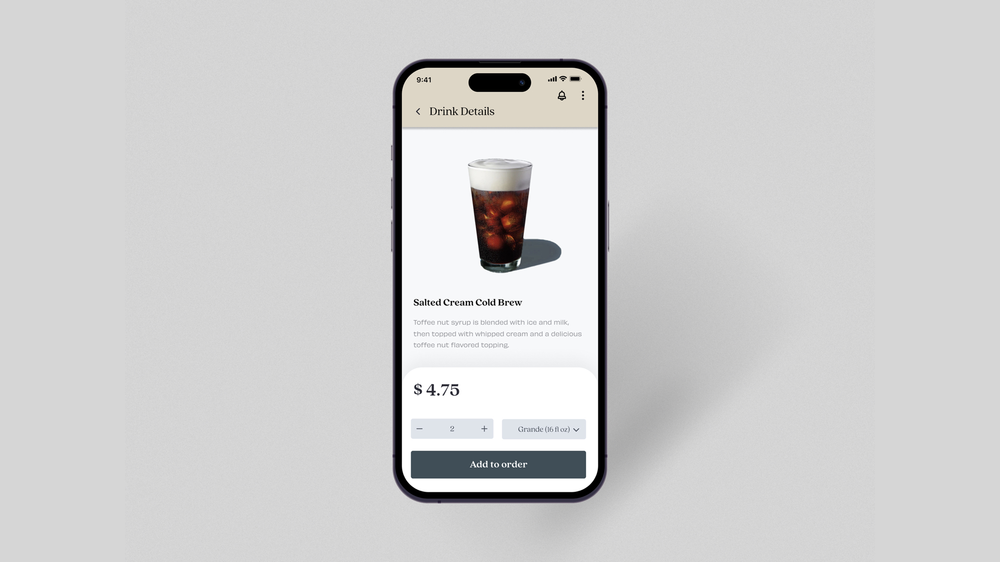
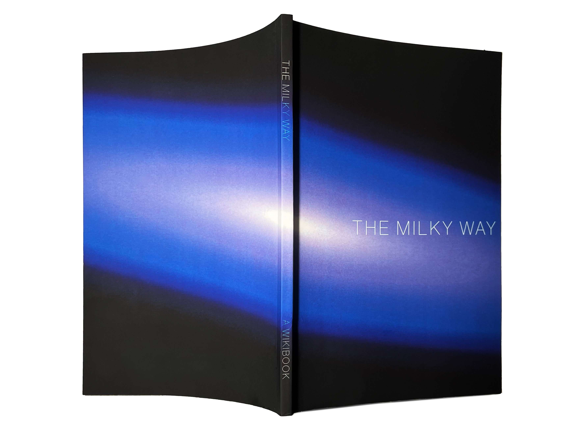

People Magazine Rebrand
Bringing an element of professionalism and classiness to a platform for celebrity news and gossip called People Magazine.
Youtube Intro Reel
Print Magazine Covers


Website Design


Starbucks Coffee Rebrand
Revisioning Starbucks Coffee with a sense of originality and elements of nostalgia from their first ever store in Pike Place while adding a modern feel.


 



Youth & Sustainability
A free platform for easy access and knowledge on how to live more sustainability, Youth & Sustainablity is a straightforward and educational website for those in young generations who want to learn more about Earth's environment and how we can help.


Thrive By Design Rebrand
A welcoming and professional website for a career-coaching program, Thrive By Design, that provides help in those who feel stuck in their career.


On Punctuation
An interactive site that immerses the user into Gertrude Stein's essay On Punctuation


14th Street to 5th Ave
A book encapsulating the manholes I see on my way to school in New York City.


The Milky Way
A wikibook with all the information you need to know about our galaxy, the Milky Way.



Antifragile by LE SSERAFIM Posters
A fun independent project where I designed posters for my current favorite KPOP group LE SSERAFIM.